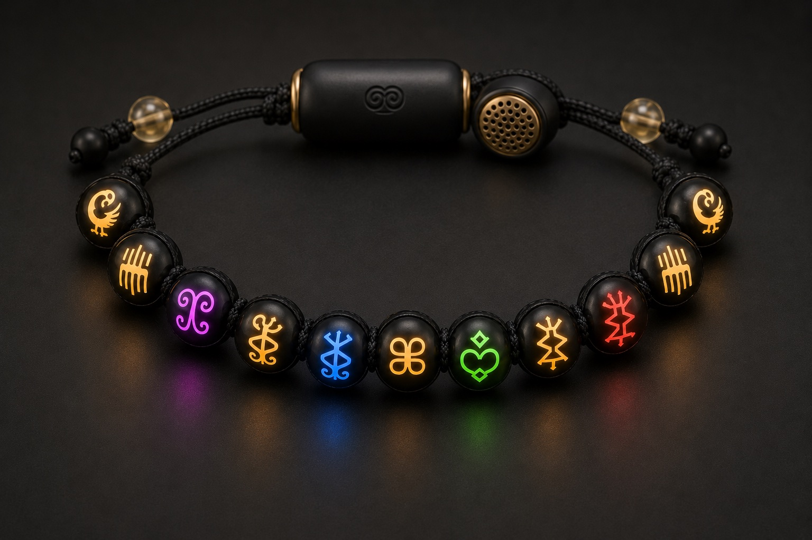

The first beaded technology
The people
you carry.
Worn on the wrist. Felt across the distance.

A 3D anatomy of the bracelet: each matte-black bead carries an engraved gold Adinkra symbol, a small circuit board and a haptic motor; the gold core hub holds the battery, microphone and speaker.
Why M’akoma
Only the few who matter, kept close.
No feed. No noise. No one watching.
- No feed
- No algorithm
- No filters
- No followers
- No likes
- No rankings
- No comparison
- No performance
Presence, not posts.
M’akoma — “my heart”, literally
Always within reach — rarely truly there. Now, a touch they feel in the moment.
The circle
The people you carry — one turn at a time.
Maya
Sankofa
Return & retrieve — it is not wrong to go back for what you forgot.
Comes back around
How it begins
Three beads,
then a lifetime.


A friend can live in a bead before they own anything.
Where we live
Not on a screen. On the people you love.
The road
Built slowly.
Built to last.
A small circle first. Then yours.
Beaded technology
A platform
you can wear.
Each bead, a connection. The thread, a circle.
Carry them
with you.
The first beads are being strung.
Founding circle · now forming
A founding circle of a few hundred. No more. Founding pricing and ship dates go to the circle first.
Questions
When can I get one?
We’re hand-building the first units now. Join the circle and you’ll be first to hear ship dates — before any public announcement.
How much will it cost?
Founding-circle pricing is being finalized. Circle members lock it in first, ahead of the public price.
Do my friends need to buy one too?
No. You buy one bracelet and invite people from the app — they can light and speak to your beads from their phone before they ever own hardware. When they get a bracelet, it becomes two-way.
Is it a smartwatch or fitness tracker?
No. M’AKOMA is jewelry first — no screens, no feeds, no step counts, no notifications. Just the few people you choose, with you all the time.
How is it different from Bond Touch?
Bond Touch is a single hub between two people. M’AKOMA is a string of distinct beads — each one a different person, with light, haptics and their real voice.
Can I give one as a gift?
Yes — it’s one of our favorite ways to start a circle. Choose As a gift above and we’ll help you make it special.